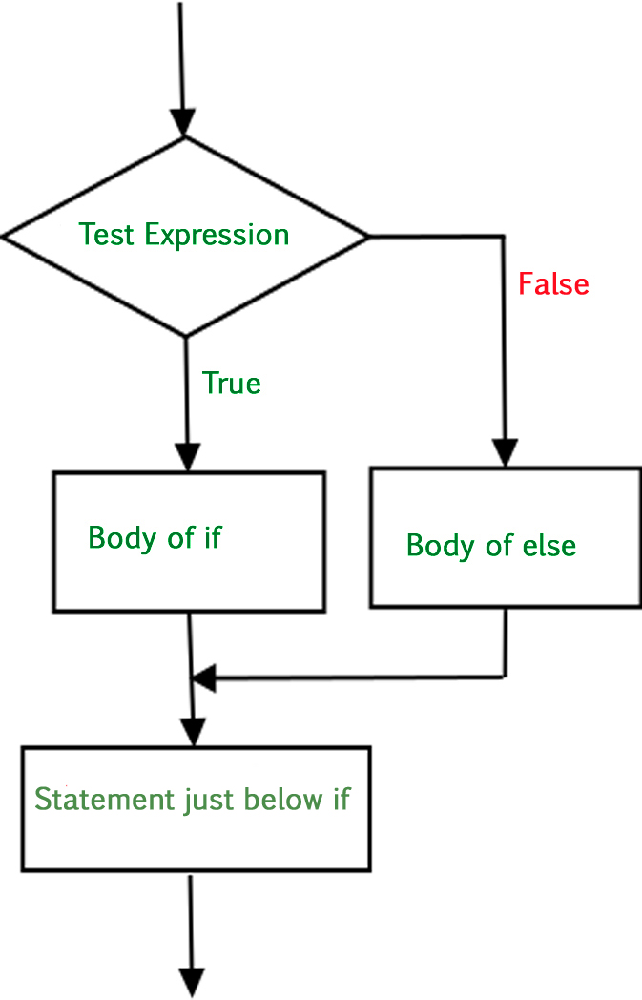

Flow Control#
There comes situations in real life when we need to make some decisions and based on these decisions, we decide what should we do next.
Similar situations arise in programming also where we need to make some decisions and based on these decisions we will execute the next block of code. Decision-making statements in programming languages decide the direction of the flow of program execution.
If statement#
It is used to decide whether a certain statement or block of statements will be executed or not
if condition:
# Statements to execute if
# condition is true
The condition after evaluation will be either true or false
If the statement accepts boolean values – if the value is true then it will execute the block of statements below it otherwise not.
Python uses indentation to identify a block. So the block under an if statement will be identified as shown in the below example:
if condition:
statement1
statement2
# Here if the condition is true, if block
# will consider only statement1 to be inside
# its block.

Example if Statement#
# python program to illustrate If statement
i = 10
if i > 15:
print("10 is less than 15")
print("I am Not in if")
I am Not in if
If-else#
The if statement alone tells us that if a condition is true it will execute a block of statements and if the condition is false it won’t. But what if we want to do something else if the condition is false? Here comes the else statement. We can use the else statement with the if statement to execute a block of code when the condition is false.
if (condition):
# Executes this block if
# condition is true
else:
# Executes this block if
# condition is false

Example of an if-else statement#
i = 20
if i < 15:
print("i is smaller than 15")
print("i'm in if Block")
else:
print("i is greater than 15")
print("i'm in else Block")
print("i'm not in if and not in else Block")
i is greater than 15
i'm in else Block
i'm not in if and not in else Block
If-nested#
If statements can be nested inside other if statements

Example Nested if statements#
i = 10
if i == 10:
# First if statement
if i < 15:
print("i is smaller than 15")
# Nested - if statement
# Will only be executed if statement above
# it is true
if i < 12:
print("i is smaller than 12 too")
else:
print("i is greater than 15")
i is smaller than 15
i is smaller than 12 too
if-elif-else ladder#
It is possible to have a flow of if-else-statements

i = 20
if i == 10:
print("i is 10")
elif i == 15:
print("i is 15")
elif i == 20:
print("i is 20")
else:
print("i is not present")
i is 20